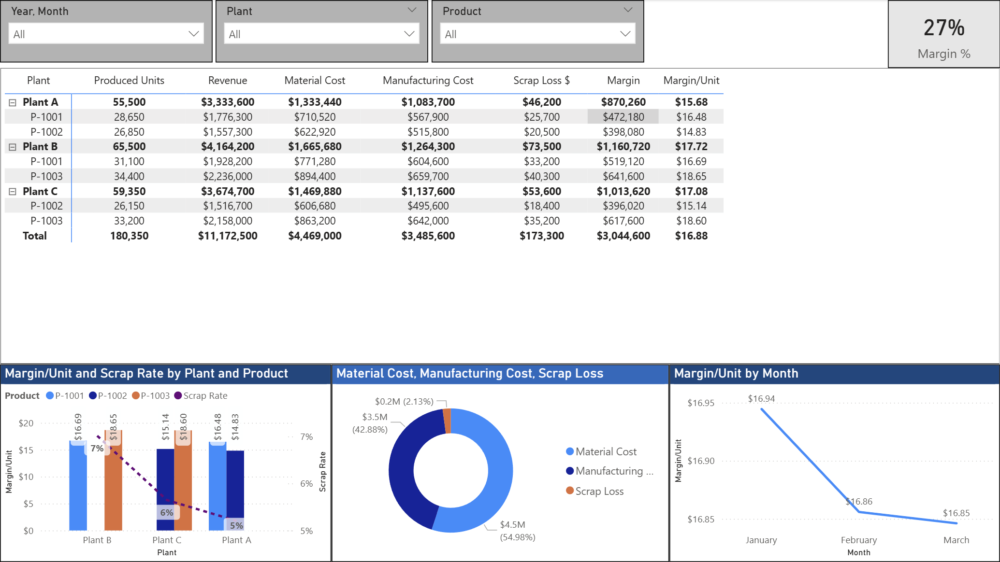

Finance Manager focused on forecasting, business partnering, and repeatable analytics pipelines. I turn monthly base data into trusted tables, models, and executive-ready insights using Power BI, Excel, Python, and SQL.
Repeatable monthly workflows that don’t break.
Power BI, Power Query, DAX, Excel modeling, Python (pandas), SQL, Git.
Star schema modeling, DAX measures, refresh performance, executive storytelling.
Forecast templates, scenario toggles, audit checks, structured inputs/outputs.
Reusable scripts that produce output tables, write to SQL, and publish Excel deliverables.

Click to view full size
assets/ folder.
Keep everything sanitized and non-confidential.
Monthly base data arrives in a fixed schema (columns don’t change). Add checks for missing/invalid values.
Transform + forecast + reconcile. Output is always a table: period, entity, actual, forecast, scenario, run_ts.
Save to SQL as the source of truth, generate Excel for finance review, and feed Power BI dashboards.
Best way to reach me: shumay.rick@gmail.com • LinkedIn: rick-shumway-64695b8b